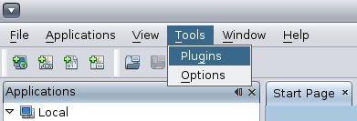
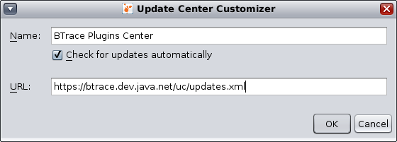
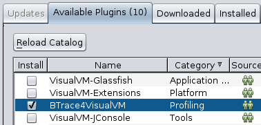
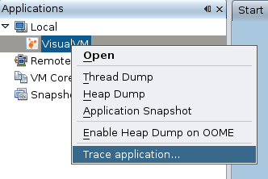

BTrace Plugin for VisualVM
Current version: 0.1
Purpose
With this plugin you can create, edit and deploy BTrace scripts directly from VisualVM
Prerequisities
- VisualVM 1.0.1 (Note that the plugin doesn't work with the "jvisualvm" bundled with JDK1.6.0_07)
Installation
-
Open Tools/Plugins menu in VisualVM

-
Add new Plugins Center - use
https://btrace.dev.java.net/uc/updates.xml as its URL

-
Once you added the new plugins center there should be a new module named BTrace4VisualVM in the
list of available plugins

-
After succesfuly installing the BTrace4VisualVM you can start tracing applications
